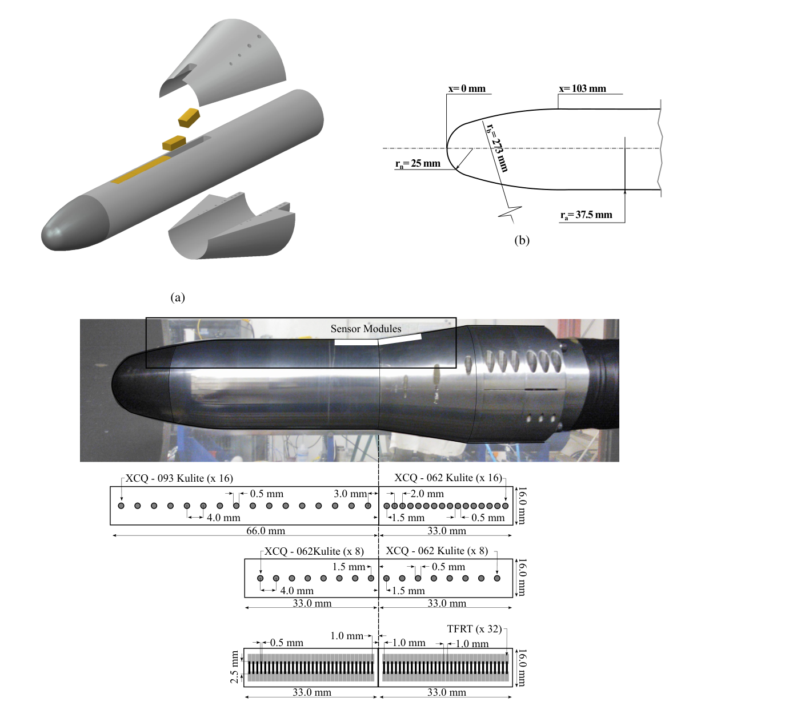
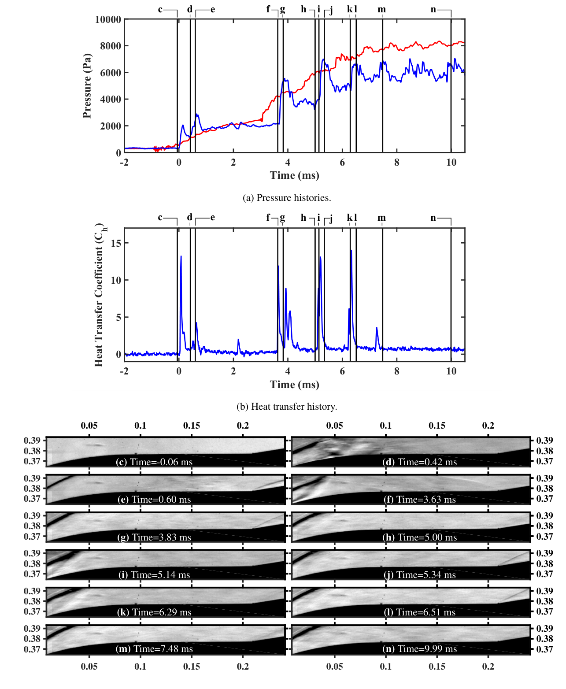
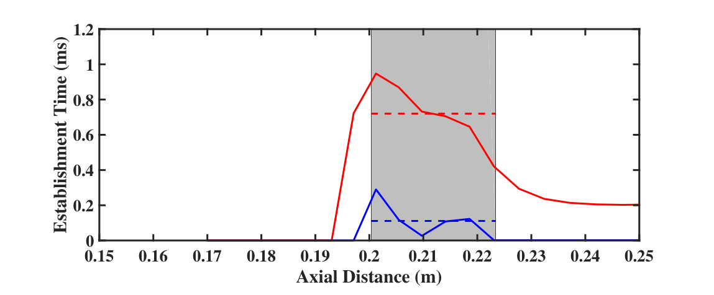
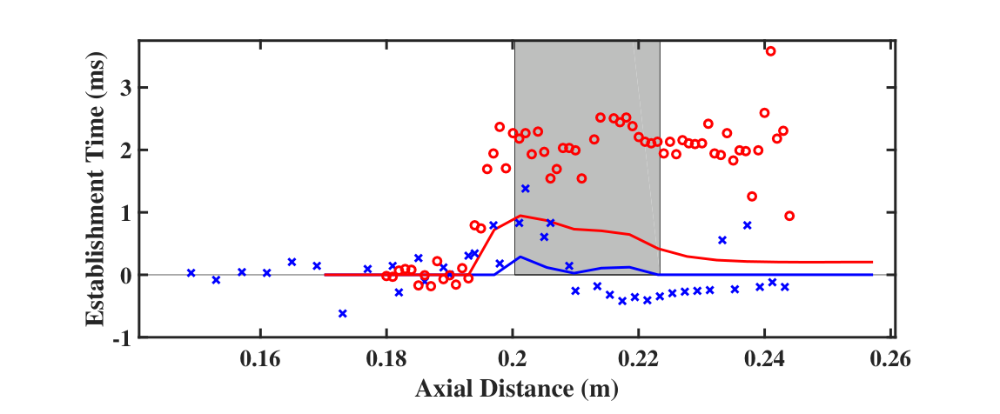

01中文摘要
考察间歇式高超声速风洞中激波/边界层干扰的建立时间，覆盖多种干扰类型与设备。短时设备的试验件设计难点在于保证干扰流场在有效试验窗内建立；本文不讨论试验件设计流程，而梳理已有建立判据与预测方法。实验与数值数据取自M∞=8.9、轴对称钝头体、8°扩张角和层流边界层。结果表明，任何单一建立判据的普适性都较差，因此提出适用于本研究的更全局的建立判据，并给出既有流动时间、波时间、传热时间和流动长度等归一化方法各自适用的条件框架。
02阅读说明
30 页 AIAA 会议/期刊格式稿件（2017），实验与数值结合的建立时间（establishment time）基准研究。bundle 30 页全文完整，含 17 幅图、4 张表；图注与正文可读，但部分图轴 OCR 有缺字（如 Fig. 9/10 纵轴、Fig. 14-16 的 M1 下标）。未回读原 PDF；所有公式均取自 bundle 文本层，式(1)-(22) 符号清晰。抓图清单中 Fig. 5、6 等多幅图未使用。文章核心不是 SBLI 机理，而是间歇风洞中 SWBLI 建立时间的定义、测量与标度评估。 文章类型：期刊
03一句话核心与三句话摘要
M8.9 钝头体 8° 拐角间歇风洞中，实验压力/热流建立时间 0.2/2.1 ms，数值低估约 2 倍，现有标度均非普适。
- 问题与缺口：短时风洞中自由来流可能已建立而 SWBLI 尚未建立，文献中缺乏统一的建立判据，flow time、wave time、heat-transfer time、flow length 等标度各自只适用于部分实验。 AI概括
- 方法与发现：在 M∞=8.9、层流边界层的钝头圆柱-8° 拐角上联合实验与 CFD，提出基于“稳态值 ±10% 与 ±1σ、1 kHz 低通”的建立判据；扣除边界层建立后，实验压力/热流建立时间为 0.2/2.1 ms，数值为 0.111/0.771 ms，数值低估 1.8–2.7 倍。 AI概括
- 结论：没有单一标度可全球适用；热流时间可作建立时间的上界，flow length/flow time 只在同一设施、相似几何的“实验族”内可插值，数值模拟必须尽量复现风洞启动过程。 AI概括
04核心内容清单
| 要点 | 类型 | 重要性 | 原文依据 | 属性 |
|---|---|---|---|---|
| 研究目标是间歇高超声速风洞中 SWBLI 的建立时间：给出可同时用于实验与数值的建立判据，并评估现有标度的适用性。 | 研究目标 | A | p1 摘要；p1-2 引言 | 原文明确 |
| 实验条件：Imperial College No.2 Gun Tunnel，氮气，M∞=8.91，P∞=3 kPa，T∞=68 K，U∞=1491 m/s，单位 Re=47×10^6/m，稳态窗口 6 ms。 | 实验条件 | A | p7；表1 | 原文明确 |
| 模型为钝头轴对称圆柱加 8° 拐角（x=0.212 m），来流为层流边界层；设计目标是层流分离、湍流附着。 | 几何/流动状态 | A | p5、p7-8；图3 | 原文明确 |
| 提出建立判据 0.9(Q̄ss-σss)<Q̂_1kHz<1.1(Q̄ss+σss)：稳态值 ±10%、±1σ、1 kHz 低通。 | 方法/判据 | A | p17，式(17) | 原文明确 |
| 上游边界层建立约 6.5 ms，与最后一道强启动波时刻 6.51 ms 一致；实验压力/热流上游建立 6.3/6.5 ms。 | 实验结果 | A | p14、p17；图8、图9 | 原文明确 |
| 分离区平均建立时间：压力 6.5 ms、热流 8.6 ms；扣除边界层建立后为 0.2 ms 与 2.1 ms。 | 核心结果 | A | p17-18；图9；表3 | 原文明确 |
| 数值建立时间 0.111 ms（压力）与 0.771 ms（热流），实验/数值比 1.8 与 2.7，数值低估约 2 倍。 | 数值-实验对比 | A | p18-20；图10、图13；表3 | 原文明确 |
| 解析标度 tw=0.060 ms、tH=1.790 ms；实验压力建立约 3.65 tw、热流建立约 1.175 tH。 | 定量标度 | A | p22；式(19)、(20)；表4 | 原文明确 |
| 分离长度随拐角近似线性，建立时间随拐角非线性，两者不成比例，故所有基于 Lsep 的标度在变几何时失效。 | 参数敏感性 | A | p18-19、p24；图11、图12 | 原文明确 |
| 没有单一标度全球适用：热流时间只能作上界；flow length/flow time 只在同一设施、相似几何的实验族内可插值；两者都不含几何因子。 | 结论 | A | p24-28；图14-图17 | 原文明确 |
| 数值收敛时间与实验建立时间定义不同：文献双锥数值 100–150 tc，实验约 1 tf，差两个数量级，不能直接比较。 | 概念辨析 | A | p21-22 | 原文明确 |
| 实验 tH/tw 不遵循 Ihrig 与 Korst 的 100/Me 关系，而近似为常数，说明该 Mach 标度不全局成立。 | 标度评估 | B | p23-24；图16；式(10) | 原文明确 |
05引言：研究问题与领域缺口
引言指出：连续式风洞可等待流动建立后再取数，而间歇式高超声速风洞运行时间极短，分离泡内的特征时间远大于外流，因此可能出现自由来流已稳态、SWBLI 却尚未建立甚至在整个稳态窗口内都不建立的情况。早期研究（Holden、Rom、Ihrig 与 Korst 等）较严谨地考察建立时间，随后出现了以 flow time、wave time、flow length 等参数缩放建立时间的经验/解析关系，近期研究常直接引用这些指标而不再独立验证。作者认为问题根源之一是实验与数值对“建立”没有共同定义：数值常用收敛到机器精度的收敛时间，实验只能收敛到测量误差。本文目标是：先梳理已有建立时间预测方法；再提出一个可同时用于实验与数值的建立判据；用 M∞=8.9 钝头体-8° 拐角的实验与数值数据提取建立时间；最后评估各标度的适用性并给出使用建议（p1-2）。
06流动条件与几何构型
| 项目 | 数值/描述 | 依据 | 备注 |
|---|---|---|---|
| 风洞与试验气体 | Imperial College No. 2 Gun Tunnel；自由活塞式；氮气；间歇运行 | p7 | 非燃烧加热风洞 |
| 来流条件 | M∞=8.91；P∞=3 kPa；T∞=68 K；U∞=1491 m/s；单位 Re∞=47×10^6 m^-1；h∞=1.2 MJ/kg | p7 表1 | 由 Mallinson 等的风洞标定给出 |
| 运行时间 | 风洞在 10 ms 后视为建立；稳态窗口 6 ms | p7 | 与后文 6.5 ms 边界层建立存在表述冲突，见待确认项 |
| 边界层边缘条件 | δ99=1.7 mm；Pe=4.6 kPa；Te=339 K；单位 Ree=3.01×10^6 m^-1；Ue=1283 m/s；Me=3.44；Lsep=0.023 m | p7 表2 | 取自数值解，边缘按 99% 热边界层定义 |
| 模型几何 | 钝头轴对称圆柱；8° 拐角位于 x=0.212 m；鼻尖半径 rn=25 mm；球头过渡半径 rb=273 mm；拐角后半径 ra=37.5 mm；鼻段长 103 mm | p7-8；图3(b) | 钝头造成强熵梯度，近壁条件与外流差异大 |
| 边界层状态 | 层流边界层；设计为层流分离、湍流时附着（collapse） | p5、p7 | 所有本文工况均为层流 |
| 压力测量 | Kulite XCQ-093×16、XCQ-062×16、XCQ-062×8；埋入腔体经 0.5 mm 引压孔；流向分辨率 0.5 mm；不确定度 2% | p9；图3(c) | 两个压力模块分别位于圆柱段与锥段 |
| 热流测量 | 薄膜热流计 TFRT×32，铂膜喷涂于 MACOR 陶瓷；流向分辨率 0.5 mm；不确定度 10% | p9；图3(c) | Schultz & Jones 方法 |
| 数据采集 | 最多 64 通道；100 kHz 采样；50 kHz 低通；ADC 信噪比 120 dB | p9 | Flyde FE-759-TA 放大、HGL Dragonfly DF24F 数字化 |
| 纹影 | Phantom v5.2 或 Photron Fastcam SA1.1；最高 100,000 fps；曝光 0.01 ms；水平刀口 | p9-10 | 用于诊断激波结构，视场见图3黑框 |
| 重复运行次数 | 压力 10 次；热流 6 次 | p17 | 作者承认仍未必统计收敛，但优于文献常见单次 |
| 数值模拟 | 时间精确；二维 Euler 二阶 Strang 分裂；一维二阶迎风 Godunov；黏性项显式二阶 RK；不考虑 N2 离解；曲线贴体网格；脉冲启动 | p10、p12 | 原文称 2D Euler 方程分裂，未明确轴对称假设 |
| 网格收敛 | 网格加倍后分离泡长度变化 <1%；建立时间计算用较粗网格，分离长度与收敛解差 10% | p10、p18 | 以分离长度作为网格收敛指标 |
| 时间收敛判据 | 所有测点达到最终值 99% 所需时间 < 总计算时间的 50%；实际运行至约 2 ms 后曲线不变，再算约 4 ms | p11-12；图6 | 比后续建立判据更严格 |
| 建立判据参数 | A=0.1；n=1；低通截止 1 kHz | p16-17，式(17) | 1 kHz 对应约 1 ms 的热流/扩散时间尺度 |
| 变拐角数值工况 | 8° 为实验基准；其余拐角见图11，横轴范围 4°–16°，具体角度文中未逐一列出 | p18-19；图11、图12 | 来流条件保持不变，仅改几何 |
07核心现象与关键参数
| 参数 | 定义 | 数值 | 关系/说明 | 依据 |
|---|---|---|---|---|
| tf | flow time，t_f=L/U∞，特征长度除以自由来流速度 | 各研究按模型/计算域长度计算；本文未单列数值 | 文献中 SWBLI 建立时间为 3tf–150tf | p3，式(1) |
| tw | wave time，t_w=Lsep/āδ，声波穿过分离区的时间 | 0.060 ms（本文解析值，按 t_w=0.023/384.2 计算） | 压力建立约 3.65 tw | p4 式(3)、(6)；p22 式(19)；表4 |
| āδ | 边界层平均声速，āδ=(γR T̄δ)^0.5 | 384.2 m/s | 由平均边界层温度经 Eckert 参考温度计算 | p4 式(4)；p22 |
| T̄δ | 边界层平均温度，用 Eckert 参考温度近似 | 文中未给数值 | T̄δ=0.5(Tw+T∞)+0.11Pr^0.5(γ-1)M∞²T∞ | p4 式(5) |
| tm | mass-transfer time，t_m=Lsep/(UeΓ)，Γ 为质量混合参数 | 文中未给数值 | Ihrig 与 Korst 三个时间尺度之一 | p4 式(7) |
| tH | heat-transfer time，t_H=Lsep/(UeSt) | 1.790 ms（本文解析值） | 热流建立约 1.175 tH；可作建立时间上界 | p4 式(8)；p22 式(20)；表4 |
| St | Stanton 数 | 取 0.01（引文[2,3,10]的典型湍流值） | 进入 tH 与 tH/tw=1/(MeSt) | p5、p22 |
| Ue | 边界层边缘速度 | 1283.6 m/s（数值解）；表2 圆整为 1283 m/s | 进入 tH 与 tm | p7 表2；p22 |
| Lsep | 分离区长度 | 0.023 m | tw 与 tH 的长度尺度；随拐角近似线性变化 | p7 表2；图12 |
| Me | 边界层边缘 Mach 数 | 3.44 | tH/tw=1/(MeSt)；St=0.01 时 =100/Me | p7 表2；p5 式(9)、(10) |
| 实验建立时间（相对边界层） | 扣除上游边界层建立后的 SWBLI 建立时间 | 压力 0.2 ms（表4 为 0.219 ms）；热流 2.1 ms（表4 为 2.101 ms） | 压力约 3.65 tw；热流约 1.175 tH | p17-18；表3、表4 |
| 数值建立时间 | 从收敛边界层解脉冲启动后的 SWBLI 建立时间 | 压力 0.111 ms；热流 0.771 ms | 实验/数值比 1.8 与 2.7 | p18-20；表3；图10 |
| 边界层建立时间 | 上游压力/热流测点达到稳态的时间 | 压力 6.3 ms；热流 6.5 ms；启动过程分析 6.5 ms / 6.51 ms | 作为 SWBLI 建立时间的参考零点 | p14、p17；图8、图9 |
| 建立判据阈值 | A（稳态值比例）、n（标准差倍数）、低通截止频率 | A=0.1；n=1；1 kHz | Q̂ 须落在 0.9(Q̄ss-σss) 与 1.1(Q̄ss+σss) 之间 | p16-17，式(17) |
| lf | flow length，l_f=t_test(2h0)^0.5，用总焓表达的无量纲流长 | 图中按储气焓 0–22 MJ/kg 给出；本文点据图17 | 高焓极限下 l_f≈t_test U∞，除以模型长度即 flow time | p5 式(11)；p25 式(21)、(22)；图17 |
| tc | 数值特征时间，t_c=Ldom/Uinflow | 各数值研究自定；文献双锥建立/收敛时间 100–150 tc | 类比 flow time，但域长常小于模型长 | p21 式(18) |
08方法与数据
实验在 Imperial College No. 2 Gun Tunnel 进行：自由活塞式、Mach 8.9、氮气试验气体、单位雷诺数 47×10^6 m^-1；来流 P∞=3 kPa、T∞=68 K、U∞=1491 m/s、h∞=1.2 MJ/kg；风洞在 10 ms 后视为建立、稳态窗口 6 ms（p7，表1）。模型为钝头轴对称圆柱，x=0.212 m 处接 8° 拐角；钝头半径 rn=25 mm、球头过渡 rb=273 mm、拐角后半径 ra=37.5 mm，鼻段长 103 mm（图3b）。边界层边缘条件由数值解给出：δ99=1.7 mm、Pe=4.6 kPa、Te=339 K、单位 Ree=3.01×10^6 m^-1、Ue=1283 m/s、Me=3.44、Lsep=0.023 m（表2，p7）。测量包括薄膜热流计（Schultz & Jones 法，MACOR 基底，流向分辨率 0.5 mm）、表面压阻传感器（Kulite，埋在 0.5 mm 引压孔后的腔体内）和高速纹影；每次运行两个传感器模块，分别位于圆柱段与拐角后锥段；64 通道、100 kHz 采样、50 kHz 低通，ADC 信噪比 120 dB；压力不确定度 2%、热流 10%；压力 10 次、热流 6 次重复运行（p7-10）。纹影用 Phantom v5.2 或 Photron SA1.1，最高 100,000 fps、曝光 0.01 ms、水平刀口（p9-10）。数值采用时间精确的分裂格式：二维 Euler 方程二阶 Strang 分裂，一维 Euler 用二阶迎风 Godunov 求解，黏性项显式二阶 Runge-Kutta；不考虑 N2 离解；曲线网格贴体并局部拟合弓形激波与边界层；网格加倍后分离泡长度变化小于 1%；建立时间计算受成本限制改用较粗网格，其分离长度与网格收敛解差 10%（p10-12、p18）。建立判据：0.9(Q̄ss-σss)<Q̂_1kHz<1.1(Q̄ss+σss)，即稳态值 ±10%、±1σ、1 kHz 低通（p17，式17）。实验建立时间先由上游边界层建立时间扣除，得到相对于边界层建立的 SWBLI 建立时间（p17-18）。
| 项目 | 内容 | 依据 | 备注 |
|---|---|---|---|
| 研究类型 | 实验与数值结合的基准研究（benchmark），辅以文献数据再分析 | p1-2、p20 | 非单一机理研究 |
| 实验设施 | Imperial College No. 2 Gun Tunnel，M8.9 自由活塞风洞，氮气 | p7 | 多道反射压缩波逐级建立 |
| 模型 | 钝头轴对称圆柱 + 8° 拐角，x=0.212 m；两个传感器模块跨干扰区 | p7-8；图3 | 模块可更换，覆盖圆柱段与锥段 |
| 压力测量 | Kulite 压阻传感器，埋腔 + 0.5 mm 引压孔，0.5 mm 流向分辨率，误差 2% | p9 | 两种模块共 40 个压力测点（16+16+8） |
| 热流测量 | TFRT 薄膜热流计，铂膜/MACOR，0.5 mm 分辨率，误差 10% | p9 | 32 个热流测点 |
| 纹影 | 100,000 fps，0.01 ms 曝光，水平刀口；用于判别分离/附着激波结构 | p9-10、p13-14；图8 | 分离结构较暗，附着结构更清晰 |
| 数据采集 | 64 通道、100 kHz、50 kHz 低通、120 dB SNR | p9 | 足以解析 ms 级建立过程 |
| 数值格式 | 时间精确算子分裂；二阶 Strang 分裂；二阶迎风 Godunov；黏性项显式二阶 RK | p10 | 求解器此前已发表，本文仅概述 |
| 气体模型 | 不考虑 N2 离解，流动视为“冷”且离解不显著 | p10 | 限制了对空气/高焓的适用性 |
| 网格 | 曲线网格贴体拟合弓形激波与边界层，高梯度区加密；网格加倍分离长度变化 <1% | p10；图5 | 建立时间计算用粗网格，Lsep 差 10% |
| 时间推进验证 | 99% 收敛时间 < 总时间 50%；约 2 ms 后曲线不变，再算 4 ms | p11-12；图6 | 强调时间收敛不等于建立 |
| 建立判据 | 式(12)-(17)：阈值判据→低通→稳态分解→正态近似→具体 10%/1σ/1 kHz | p14-17 | A、n、截止频率可按设施调整 |
| 实验建立时间提取 | 对 10 次压力、6 次热流运行逐次应用判据后系综平均；再减去上游边界层建立时间 | p17-18 | 以边界层建立为共同参考点 |
| 数值建立时间提取 | 从收敛边界层解脉冲启动带拐角模型，应用式(16)判据；并做 4°–16° 变拐角试验 | p18-19 | 未能模拟风洞启动过程 |
| 标度评估 | 将本文与 Holden、Rom、Mallinson、Swantek 等数据分别用 tw、tH、lf、tf 归一，检查是否落在常数线 | p22-26；图14-图17 | 区分局部标度与全局标度 |
| 不确定度 | 压力 2%、热流 10%；建立判据取 10% 上限；未给建立时间的置信区间 | p9、p16-17 | 判据参数选择本身带来不确定性 |
09核心推导与公式
先由“流动时间—声波时间—质量/热交换时间”给出 SWBLI 建立的特征时间尺度层级，再把“建立”形式化为信号进入稳态值邻域并保持的判据；对信号低通、把稳态值分解为均值与慢变偏差、用正态分布的标准差倍数界定允许波动，得到可同时用于实验与数值的阈值不等式；最后用 Lsep、āδ、Ue、St 计算 tw 与 tH，并用 lf 的高焓极限说明 flow length 与 flow time 等价。
关键假设
- 分离区建立由局部时间尺度控制：声波传播（tw）、质量混合（tm）、热交换（tH），其中扩散/热交换最慢（p4-5）
- 边界层平均声速可由平均边界层温度按 āδ=(γR T̄δ)^0.5 计算，平均温度用 Eckert 参考温度近似（p4）
- Stanton 数取典型湍流值 St=0.01，用于把 tH/tw 简化为 100/Me（p5）
- 存在可定义的稳态值 Qss；实验窗口内可近似为常数 Q̄ss 加低通慢变偏差 Q̂Var(t)（p16）
- 低通后的稳态波动近似正态分布，可用 ±nσss 界定（p16）
- 建立判据参数 A=0.1、n=1、截止 1 kHz 适用于本文设施；其他设施可不同（p16-17）
- 高焓条件下 h0≈U∞²/2，故 lf≈t_test U∞，flow length 与 flow time 等价（p25）
推导过程
以特征长度除以自由来流速度定义 flow time，作为最直观的建立时间尺度；引文给出激波管中半无限平板层流边界层的建立时间约为 3.333 个流动时间。该式只适用于层流平板，不能直接用于 SWBLI。
Holden 提出以声波穿过分离区的速度归一，称为 wave time；声速由边界层平均温度经气体状态方程给出，平均温度用 Eckert 参考温度近似。该尺度使用分离区局部条件，比自由来流尺度更贴近干扰物理。
Ihrig 与 Korst 把建立分解为三个时间尺度：声波、质量交换与热交换。质量交换时间用边界层边缘速度与质量混合参数 Γ 归一；热交换时间用边缘速度与 Stanton 数归一。三者中热交换最慢。
把 tw 与 tH 相除，Lsep 消去，得到只含边缘 Mach 数与 Stanton 数的比值；代入 St=0.01 后得到 100/Me。该式预测热流建立时间随 Mach 数增大而缩短，并在高 Mach 数趋于渐近。
把“建立”定义为信号 Q(t) 进入稳态值 Qss(t) 的 ±A 邻域并保持。由于 Q(t) 含非定常、噪声与测量误差，直接判据不稳健；先对信号低通，去掉高于建立相关频率的分量，得到 Q̂。
把低通后的稳态值拆成时间不变均值 Q̄ss 与低通慢变偏差 Q̂Var(t)。假设偏差服从正态分布，则稳态窗口内的波动幅度可写为 ±nσss；代回判据得到一般形式，n 相当于置信区间倍数。
取实验准确度上限 A=0.1、n=1（约 70% 稳态波动被允许）、截止频率 1 kHz（对应约 1 ms 的扩散/热流时间尺度），得到本文使用的具体不等式。不同设施可改变这三个参数，作者称建立时间的量级对参数在较宽范围内不敏感。
Mallinson 等用总焓定义 flow length lf=test(2h0)^0.5。高焓时 CpT≪U∞²/2，故 2h0≈U∞²，lf≈test U∞；再除以模型长度 L 即得 test/tf，说明 flow length 标度本质上是未除以模型长度的 flow time。
用网格收敛数值解给出 Lsep=0.023 m、āδ=384.2 m/s、Ue=1283.6 m/s，并取 St=0.01，算得 tw=0.060 ms、tH=1.790 ms；与实验建立时间相比得到 3.65 tw 与 1.175 tH。
适用边界：判据中的 A、n、截止频率均为人为选择，换值会改变建立时间；稳态波动服从正态分布的假设未验证；tw、tH 使用局部平均量与常数 St=0.01，而本文边界层为层流，取湍流典型 St 存在概念不一致；解析式只给出量级，不含几何、边界层建立时间与激波结构；flow length 与 flow time 的等价只在 h0≈U∞²/2 的高焓极限成立。
10结果：主要发现与关键证据
风洞启动过程（图8）显示多次弱启动波：喉道压力分五级抬升（图7），最后一道强启动波在 t=6.51 ms，此后边界层才可认为建立；在此之前分离区多次被压塌为附着激波。实验上游（x<0.19 m）压力与热流建立时间分别为 6.3 ms 与 6.5 ms，与启动过程分析给出的 6.5 ms 一致；分离区平均建立时间为压力 6.5 ms、热流 8.6 ms（图9，p17）。扣除各自边界层建立时间后，SWBLI 压力建立 0.2 ms、热流建立 2.1 ms（表3，p20）。数值从收敛边界层解出发、脉冲启动，压力/热流建立时间为 0.111/0.771 ms；实验/数值比为 1.8（压力）与 2.7（热流），即数值低估约 2 倍，分离点处差异最大（图13，表3，p20）。解析标度：Lsep=0.023 m、āδ=384.2 m/s、Ue=1283.6 m/s、St=0.01，得 tw=0.060 ms、tH=1.790 ms；实验压力建立约 3.65 tw，热流建立约 1.175 tH（表4，p22）。变拐角数值试验（图11、12）表明：分离长度随拐角近似线性增加，而压力/热流建立时间呈非线性，两者不成比例，导致所有基于 Lsep 的标度在变几何时失效（p18-19、p24）。与文献对比（图14-16）：热流建立时间在 0.037–1.175 tH 之间，热流时间只能作上界；实验 tH/tw 不遵循 100/Me 的 Mach 标度，而近似为常数；flow length 标度（图17）在同类设施/几何内近似线性，但全局无统一趋势（p22-26）。
| 发现 | 证据 | 证据类型 | 强度 | 位置 | 属性 |
|---|---|---|---|---|---|
| 在本设施中，SWBLI 的建立必须晚于边界层建立；最后一道强启动波后边界层才建立，时间约 6.51 ms。 | 图8 的纹影序列：6.51 ms 前分离区多次被压塌为附着激波；上游压力/热流在 6.3/6.5 ms 达到稳态（图9）；正文明确以 6.51 ms 作为边界层建立估计。 | 实验观察 | 强 | p13-14、p17；图8、图9 | 原文明确 |
| 扣除边界层建立后，实验表面压力建立时间约 0.2 ms，热流建立时间约 2.1 ms，热流慢约一个量级。 | 表3：实验 0.2/2.1 ms；表4：0.219/2.101 ms；图9 分离区平均 6.5/8.6 ms。 | 定量结果 | 强 | p17-18、p20；表3、表4；图9 | 原文明确 |
| 同一工况的数值模拟给出压力 0.111 ms、热流 0.771 ms，比实验低估约 2 倍（比值 1.8 与 2.7）。 | 表3 的 factor 行；图13 实验与数值建立时间对比；正文称 under predict by a factor of ≈2。 | 数值-实验对比 | 强 | p18-20；表3；图13 | 原文明确 |
| 实验压力建立约需 3.65 个 wave time，热流建立约需 1.175 个 heat-transfer time。 | 表4：解析 tw=0.060 ms、tH=1.790 ms，实验 0.219/2.101 ms，比值为 3.650/1.175。 | 标度验证 | 中 | p22；表4 | 原文明确 |
| 分离长度随拐角近似线性变化，而建立时间随拐角非线性变化，两者不成比例。 | 图11（建立时间 vs 拐角）与图12（分离长度 vs 拐角）对比；正文明确指出。 | 参数敏感性 | 强 | p18-19、p24；图11、图12 | 原文明确 |
| 没有任何单一标度可全球适用：wave time、heat-transfer time、flow time、flow length 均无法把全部文献数据归一到常数。 | 图14-图17 的数据散度；正文明确 none of the scaling parameters investigated is universal。 | 文献再分析 | 强 | p22-26；图14-图17 | 原文明确 |
| 热流时间系统性高估热流建立时间，可作保守上界，但有时高估数量级。 | 图14：热流建立时间分布在 0.037–1.175 tH，多数低于 1；正文称 reasonable upper estimate。 | 标度评估 | 中 | p22-24；图14 | 原文明确 |
| flow length/flow time 在同一设施、相似几何的实验族内可较好插值，但跨几何失效。 | 图17 中同类设施数据随储气焓近似线性，本文不同拐角的数值点则明显分散；正文给出实验族定义。 | 标度评估 | 中 | p24-26；图17 | 原文明确 |
| 实验 tH/tw 不遵循 100/Me 的 Mach 标度，而近似为常数。 | 图16：实验点随 M1 近似水平，与式(10)的双曲线不符。 | 标度评估 | 中 | p23-24；图16；式(10) | 原文明确 |
| 数值收敛时间与实验建立时间差两个数量级，根源是定义不同而非物理矛盾。 | 文献双锥数值 100–150 tc，同类实验约 1 tf；正文用机器精度与测量误差的差异解释。 | 概念辨析 | 中 | p21-22 | 原文明确 |
11机制解释与论证链
SWBLI 的建立受分离区内最慢的扩散/热交换过程限制，而不是自由来流的对流时间。声波穿过分离区只需几个 tw，因而壁面压力可在约 0.2 ms 内建立；热流依赖边界层内热扩散与壁面热交换，需要约一个 tH（2.1 ms）。二者之前还必须先有边界层本身的建立：钝头体鼻部低速区使边界层建立缓慢，本设施中直到最后一道强启动波（6.51 ms）之后边界层才可认为建立，其上游压力/热流测点也在 6.3/6.5 ms 达到稳态。风洞的多道启动波会反复压塌分离区、 distort 弓形激波，使任何在最后一道强波之前提取的“建立时间”都偏短或不可信。变拐角时分离长度近似线性增加，但建立时间非线性增加，说明建立不仅取决于 Lsep，还取决于局部激波结构、分离泡形状与边界层状态；因此只含 Lsep 的局部标度（tw、tH）与完全不含局部条件的全局标度（tf、lf）都无法同时描述跨设施、跨几何的数据。【AI概括，依据 p4-5、p13-19、p24-26】
12讨论：结论、贡献与局限
作者强调“收敛时间”与“建立时间”本质不同：数值收敛是相对机器精度（双精度约 10^-16），实验建立只到测量误差（1–10%），因此数值收敛判据严格得多。文献中双锥数值研究给出 100–150 tc，而类似双锥实验约 1 tf，两者差两个数量级，不能直接比较；若统一采用本文判据，差异可能大幅缩小（p21-22）。对标度的评估是本文核心：wave time 与 heat-transfer time 属“局部”标度，依赖分离区局部条件，但未计入边界层建立时间，跨设施时失效；flow time 与 flow length 属“全局”标度，忽略局部条件，跨实验族失效，但在同一设施、相似几何内可较好插值；两者都不含几何因子，变拐角时散度很大（p24-28）。热流时间系统性高估热流建立时间，可作保守上界，但可能高估数量级，因此“低于上界”不能判定未建立（p26）。作者建议按数据量选择混合策略：新设施/新几何应做专门启动测量；有相似几何与设施数据时可用数值估计；仅改变来流条件时可用 flow length/flow time 在实验族内插值；任何情况下都应尽量模拟风洞启动过程，因为数值建立时间强烈依赖启动条件（p26-27）。作者还指出本文只研究氮气，空气的离解与非平衡会改变建立时间，需另做研究（p28）。
作者结论
本文以 M∞=8.9 钝头体-8° 拐角的实验与数值为基准，研究了间歇风洞中 SWBLI 的建立时间。主要结论：文献中不存在全球适用的建立时间标度；建立判据必须明确定义，作者提出“稳态值 ±10%、±1σ、1 kHz 低通”的判据并同时用于实验与数值；扣除边界层建立后，实验压力/热流建立时间为 0.2/2.1 ms，数值为 0.111/0.771 ms，数值低估约 2 倍；压力建立约 3.65 tw，热流建立约 1.175 tH；变拐角时分离长度线性而建立时间非线性，所有基于 Lsep 的标度在变几何时失效；热流时间可作保守上界，flow length/flow time 仅适用于同一设施、相似几何的实验族；数值模拟是最有前景的预测手段，但必须尽量复现风洞启动过程。
主要贡献
- 提出一个可同时用于实验与数值的 SWBLI 建立判据（10%/1σ/1 kHz），并把“建立”与“收敛”明确区分。
- 在同一模型、同一来流下给出实验与数值建立时间的直接对比，构成 benchmark 数据集。
- 给出本设施中边界层建立（约 6.5 ms）与 SWBLI 建立（0.2/2.1 ms）的分解。
- 系统评估 flow time、wave time、heat-transfer time、flow length 四类标度，指出局部/全局标度各自的失效模式。
- 通过 4°–16° 变拐角数值试验证明分离长度与建立时间不成比例，揭示几何因子的缺失。
- 给出按可用数据量选择预测方法的混合策略。
局限与未解决问题
仅一个设施、一个模型、一个 Mach 数（8.9）与氮气；实验仅 10 次压力、6 次热流运行，统计收敛有限；建立判据的 A、n、截止频率为人为选择，未给敏感性分析；数值为二维、未模拟风洞启动过程、未考虑 N2 离解，且建立时间计算使用比网格收敛解粗的网格（Lsep 差 10%）；实验观察到 Görtler 型三维涡，二维求解器无法捕捉再附区差异；解析标度使用湍流典型 St=0.01，而本文边界层为层流，存在概念不一致；未研究空气与非平衡效应；未给出建立时间的置信区间或不确定度传播。
13对高速流动与工程的意义
对短时高超声速风洞试验设计有直接工程价值：可用“边界层建立时间 + 热流时间”作保守运行时间预算，用 tw 快速估计压力建立量级，用 flow length/flow time 在同一设施内插值不同来流条件；提醒设计者不能仅凭文献标度宣称实验已建立，尤其不能跨几何外推。方法上，统一判据使实验与数值的建立时间首次可直接比较，并解释了文献中数值“100–150 tf”与实验“约 1 tf”的表观矛盾。对进气道/隔离器类 SWBLI 试验，本文结论提示：短时风洞中压力测点可能早已稳定而热流与分离区尚未建立，热流与分离长度应作为建立判据的关键量。不能回答空气/真实气体、湍流边界层、强三维几何、其他 Mach 数下的建立时间，也不能给出可跨几何的通用公式。【AI推断，基于原文结论与方法定位】
14核心图件




15可引用原文素材
| 原文短句 | 可支持的观点 | 位置 | 使用建议 |
|---|---|---|---|
| “The global applicability of any single metric is poor” | 没有单一建立时间标度可全球适用 | p1 摘要 | 引用全文核心判断 |
| “neither the boundary-layer nor SWBLI could be considered established before the last strong starting shock” | 最后一道强启动波之前边界层与 SWBLI 均未建立 | p14 | 说明启动过程对建立时间的影响 |
| “6.5 ms for surface pressure and 8.6 ms for the heat-transfer” | 分离区平均建立时间 | p17；图9 | 引用分离区建立时间 |
| “numerical simulations seem to under predict establishment times by a factor of ≈2” | 数值低估实验建立时间约 2 倍 | p20 | 引用数值-实验差异 |
| “Surface-pressure establishment takes approximately 3.5 wave-times” | 压力建立约 3.5 tw | p22 | 引用 wave time 标度结果 |
| “heat-transfer establishment times are approximately equal to the heat-transfer time” | 热流建立约 1 tH | p22 | 引用热流时间标度结果 |
| “none of the scaling parameters investigated is universal” | 所有考察的标度均非普适 | p26 | 引用标度评估结论 |
| “the flow length is also not a universal scaling parameter” | flow length 标度不具全球适用性 | p24；图17 | 说明全局标度的局限 |
16最终核验
| 核验项 | 结论 |
|---|---|
| 仅基于全文 | 是。仅使用 bundle 的 30 页全文、17 幅图注与 4 张表；未回读原 PDF，未引入外部知识或外部数据。 |
| A 级要点有依据 | 是。A 级要点均有页码/表/图/公式支撑：来流与几何（p7、表1、表2、图3）、建立判据（p17 式17）、边界层建立 6.5 ms（p14、图8）、实验 0.2/2.1 ms（表3、表4、图9）、数值 0.111/0.771 ms（p18、表3、图13）、tw/tH（p22、表4）、变拐角（图11、图12）、标度非普适（图14-17、p26）。 |
| 属性标注 | 是。原文明确、AI概括、AI推断逐条标注；机制段与工程意义末注明属性。 |
| 覆盖范围 | bundle 1990 行、30 页全文读完（PAGE 1-30 至参考文献结束）；使用抓图清单中的图3、8、9、13；未使用 Fig. 1、2、4-7、10-12、14-17 作为 figures。 |
| 无编造 | 是。未编造页码、图号、公式或数据；正文未逐一列出的变拐角角度写“文中未逐一列出”，仅给图轴 4°–16°；T̄δ、tm 等无数值处写“文中未给”；表3 与表4、正文与表1 的数值差异如实列入 open_questions。 |
需回原文确认
- p7 称风洞“在 10 ms 后视为建立、稳态窗口 6 ms”，但 p14 与图9 显示边界层在 6.5 ms 已建立、数据在 6–10 ms 取，二者时间基准需回原文确认。
- 表3 实验压力建立 0.2 ms、表4 为 0.219 ms；热流 2.1 与 2.101 ms，正文与表格的圆整/取值口径需统一。
- 正文称数值低估约 2 倍，而表3 的比值为 1.8（压力）与 2.7（热流），差异范围需明确。
- 建立判据取 St=0.01（典型湍流值），但本文边界层为层流，tH 及 tH/tw 的定量值是否适用需核对。
- A=0.1、n=1、1 kHz 的选择缺少敏感性分析；作者仅称量级对较宽参数范围不敏感，未给数据。
- 变拐角数值试验的具体角度列表未在正文给出，只能从图11 横轴读为 4°–16°，需回原文/图确认。
- 二维求解器无法捕捉实验观察到的 Görtler 型三维涡，再附区压力/热流差异有多少来自三维效应，文中未定量。
- 数值建立时间使用比网格收敛解粗的网格（Lsep 差 10%），该误差与“低估 2 倍”是否部分相关，文中未讨论。
17关联文献
依据标签、板块、构型与作者脉络自动关联，可据此追踪同一问题的前序与后续工作。
18引用格式
选择期刊风格后复制；出处保留原刊名。BibTeX 可直接用于 LaTeX。
引用格式
Vanstone, L., Estruch-Samper, D. & Ganapathisubramani, B. 2017 Establishment Times of Hypersonic Shock-Wave/Boundary-Layer Interactions in Intermittent Facilities. AIAA Journal 55 (9), 2875–2887. https://doi.org/10.2514/1.J055575
PDF上传 PDF 并更新本页
本页缺少全文、摘要或图件时，可在浏览器本地补入 PDF。解析完全在本机完成，不上传网络；完成后会更新本页的 PDF 打开链接、原摘要、IMRaD 机器抽取、关键句与含图页面。复杂的公式语义与中文深度解读仍以原文和既有精读记录为准。